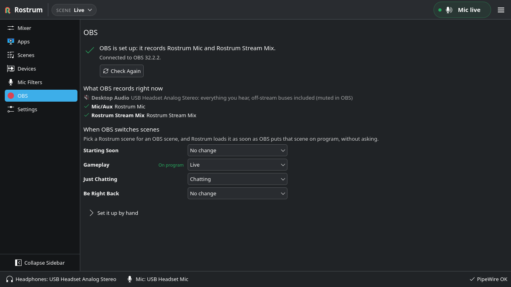

A stream mix console for Linux, not a patchbay.
Split your game, voice chat, mic, music, alerts and desktop audio into named buses. Send each one to your headphones, to the stream, or to both, and let OBS record one clean mix.
Free and open source (Apache-2.0). Version 0.1.0, for Linux with PipeWire.

A mixing desk, not a graph
Tools like qpwgraph and Helvum show every port and every link. Rostrum hides the graph and gives you a mixing desk instead: faders, meters, mute and solo, and scenes you can switch live.
It targets any current Linux desktop on PipeWire and WirePlumber. Plasma, GNOME and other desktops are in scope; X11 is a fallback. The virtual devices live in PipeWire, not in the app, so audio keeps flowing if Rostrum quits or crashes.
Buses, not wires
Each source gets a named bus with a fader and a meter. No ports to connect by hand.
Two mixes from one console
What you hear and what your audience hears, set per bus: Headphones, Stream or Both.
Features
Everything below is in version 0.1.0.
-
Six buses to start
Mic, Game, Voice, Music, Alerts and Desktop, each with a fader and mute. Every playback bus gets solo. Add more, up to twelve.
-
Headphones and Stream mixes
Send each bus to your headphones, the stream, or both. Music can play for viewers without playing in your ears.
-
Your mic, protected
The mic has its own bus with optional sidetone. If it is unplugged, the stream mic stays silent until it comes back. No other mic goes live unless you allow it.
-
Apps find their bus
Discord goes to Voice, Spotify to Music, Steam and Proton games to Game, Streamer.bot to Alerts. Every placement shows why it was made.
-
Apps remember their bus
Drag an app onto a bus once and it lands there every time, even before Rostrum starts at your next login.
-
Per-app volume and mute
Turn one app down or mute it without touching the rest of its bus. Every app shows its own icon, in the mixer too.
-
Balance and mono headphones
Pan any playback bus left or right, and fold your headphones to mono if you listen with one ear.
-
Scenes
Recall every level, mute and destination at once. Changes save to the live scene by themselves. Start from presets like Gaming, Just Chatting or Podcast.
-
OBS in one click
OBS captures one clean Rostrum Stream Mix and one Rostrum Mic. Rostrum shows every change first, mutes sources that would double your audio, and can undo it all.
-
Knows when you are live
LIVE and REC badges follow OBS. A warning appears if you go live with your mic muted or nothing reaching the stream. OBS scenes can switch Rostrum scenes.
-
Global hotkeys
Mute the mic or the stream and switch scenes from anywhere. Bind push to talk, push to mute and a panic mute for mic and stream at once.
-
Command line and D-Bus
Drive Rostrum from Stream Deck buttons, KDE Connect or scripts with the
rostrumcommand or the session bus. There is no network listener. -
Auto-ducking and fades
Optionally let your voice turn Music down while you speak, and fade between scenes instead of switching at once.
-
Compact view
A small mixer with your mic, scene, masters and a slim fader per bus that can stay on top of a game or OBS.
-
Undo and backups
Undo and redo level and bus edits. Deleted scenes wait 30 days in Recently Deleted, and one file backs up all your settings and scenes.
-
Lives in the tray
Mute, switch scenes or restart Rostrum from the tray. Choose whether closing or minimizing the window hides it there.
A closer look



Install
There are no packages or AppImage builds yet, so Rostrum installs from source into your home folder. You need PipeWire 1.0 or newer, WirePlumber 0.5 or newer, Qt 6.5+ and KDE Frameworks 6.8+. PulseAudio is not used or required.
- Install the build dependencies for your distribution, listed in the README.
- Build and install:
git clone https://github.com/rostrum-audio/rostrum.git
cd rostrum
cmake -S . -B build -G Ninja
cmake --build build
cmake --install build --prefix ~/.localThen start Rostrum from your app menu and follow first-time setup.
Private by default
Rostrum has no telemetry and no accounts. It makes two kinds of network request, and only if you allow them.
- Update check, once a day A plain request for getrostrum.dev/releases/latest.json, which leads to the latest GitHub release. It carries only Rostrum's version, no cookies and no ID. You can turn it off.
- Crash reports are your call Official builds only. By default Rostrum asks after a crash, and you can read the exact report first. No names, paths, device names or IDs. A plain build from source has no crash reporting at all.
- OBS stays on your computer Rostrum talks to OBS on 127.0.0.1 only. While it follows OBS, it only reads.
- No network listener Remote control goes through the command line or the D-Bus session bus, never a port.